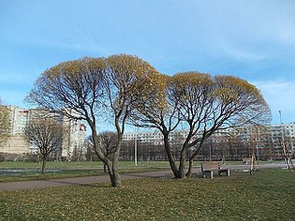
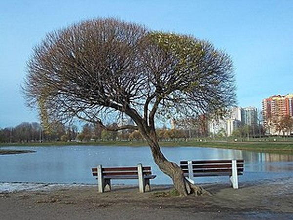
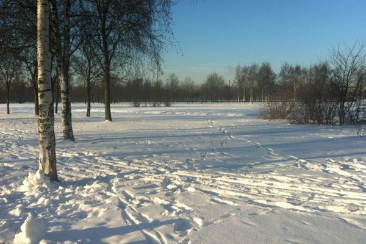
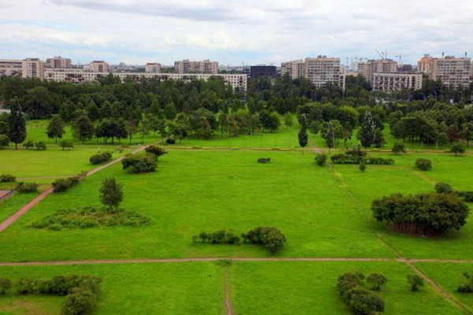
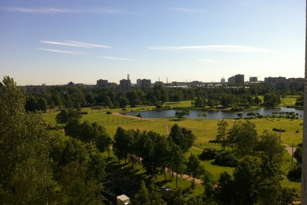

В Красногвардейском районе Петербурга между кварталами современной застройки сохранился красивый уголок природы - Полюстровский парк. Его площадь – около 45 га.
Еще в 1718 г. на правом берегу Невы обнаружили источники целебных вод. Жители расположенной здесь Казачьей Слободы отличались завидным здоровьем и долголетием. По рекомендации лейб-медика Л. Л. Блюментроста император Пётр I с придворными поправлял здоровье с помощью «стальных вод» полюстровских ключей.
В 1770 г. тогдашний владелец земель Г. Н. Теплов, тайный советник, дал местности название – Полюстрово. Название произошло от латинского слова paluster - «болотистый». Следующий владелец, граф А. А. Безбородко, распорядился выкопать пруд – накопитель минеральной воды. В 1829 г. доктор Б. И. Ган опубликовал впечатляющие результаты применения целебных вод в своей медицинской практике.
С 1838 г. здесь устроили водолечебницу, рядом разбили парк. Пациентам предлагали напиток внутрь, а также холодные и теплые лечебные ванны. Полюстрово превратилось в популярный курорт, который существовал до 1870 года. Для отдыхающих устраивали праздники с фейерверками, концерты и балы. Здесь поправляли здоровье знаменитости: композиторы М. И. Глинка, П. И. Чайковский и М. П. Мусоргский, артисты Александринского театра, художники И. Е. Репин, К. П. Брюллов, Б. М. Кустодиев. Курорт посещали заграничные гости, в том числе Александр Дюма (отец).
В 1870 г. все постройки курорта уничтожил пожар. В огне пострадала значительная часть парка.
В 1886 г. впервые в России князь С. С. Абамелек-Лазарев начал разливать минеральную воду "Полюстрово" в бутылки. Её продавали в аптеках и отправляли на экспорт.
В 1920-е годы развернулись работы по благоустройству территории. Завод минеральных вод в южной части парка запустили в 1935 году. Сегодня предприятие производит воду «Охтинскую» (хлоридно-натриевую) и «Полюстрово» (слабоминерализованную железистую), сиропы и лимонады.
Полюстровский парк был возрожден в 1967 г., к юбилею революции, и переименован в парк имени 50-летия Октября. У центрального входа со стороны шоссе Революции установили памятную колонну, увенчанную серпом и молотом. Были посажены деревья, расчищены три водоема, разбиты цветники. Перепланировки происходили в 1973 и 1987 годах. В 2007 г. парку вернули прежнее название - Полюстровский.
Зеленая зона отличается продуманной планировкой. По территории проложены песчаные аллеи и тропинки. Высажены лиственницы, ели, липы, ясени, березы. Весной красиво цветут кусты сирени, шиповника, форзиции. В окружении деревьев расположены три пруда: большой – в центре, два поменьше – в южной части парка. В теплый сезон по водной глади плавают утки и гуси. В прудах водятся караси, карпы, ротаны.
Зеленая зона радует петербуржцев подстриженными газонами, красивыми, ухоженными цветниками. В парке установлены скамейки, темными вечерами включаются фонари. Для малышей оборудованы игровые площадки, для любителей активного отдыха есть теннисные корты, уличные тренажеры и футбольный стадион.
К памятным датам здесь устраивают праздники, исторические реконструкции военных сражений. Летом работают кафе. Жители окрестных домов отправляются на зеленые лужайки загорать, жарить шашлыки, ловить рыбу в прудах. По дорожкам катаются на велосипедах, роликах, скейтбордах; выгуливают собак. Зимой горожане катаются в парке на лыжах